Last updated: 2022-11-01
Checks: 6 1
Knit directory: anderson-peffers_OA/
This reproducible R Markdown analysis was created with workflowr (version 1.7.0). The Checks tab describes the reproducibility checks that were applied when the results were created. The Past versions tab lists the development history.
The R Markdown file has unstaged changes. To know which version of
the R Markdown file created these results, you’ll want to first commit
it to the Git repo. If you’re still working on the analysis, you can
ignore this warning. When you’re finished, you can run
wflow_publish to commit the R Markdown file and build the
HTML.
Great job! The global environment was empty. Objects defined in the global environment can affect the analysis in your R Markdown file in unknown ways. For reproduciblity it’s best to always run the code in an empty environment.
The command set.seed(20220927) was run prior to running
the code in the R Markdown file. Setting a seed ensures that any results
that rely on randomness, e.g. subsampling or permutations, are
reproducible.
Great job! Recording the operating system, R version, and package versions is critical for reproducibility.
Nice! There were no cached chunks for this analysis, so you can be confident that you successfully produced the results during this run.
Great job! Using relative paths to the files within your workflowr project makes it easier to run your code on other machines.
Great! You are using Git for version control. Tracking code development and connecting the code version to the results is critical for reproducibility.
The results in this page were generated with repository version a565a72. See the Past versions tab to see a history of the changes made to the R Markdown and HTML files.
Note that you need to be careful to ensure that all relevant files for
the analysis have been committed to Git prior to generating the results
(you can use wflow_publish or
wflow_git_commit). workflowr only checks the R Markdown
file, but you know if there are other scripts or data files that it
depends on. Below is the status of the Git repository when the results
were generated:
Ignored files:
Ignored: .Rhistory
Ignored: .Rproj.user/
Ignored: analysis/.Rhistory
Untracked files:
Untracked: analysis/03_Differential_expression.Rmd
Untracked: analysis/04_Sequencing_QC_normalisation.Rmd
Untracked: analysis/05_Sequencing_EDA.Rmd
Untracked: analysis/06_jDR.Rmd
Untracked: data/miRNA_plasma.csv
Untracked: data/miRNA_sf.csv
Untracked: data/tRNA_plasma.csv
Untracked: output/~$plasma_proDA_DE_results.xlsx
Unstaged changes:
Modified: analysis/01_QC_normalisation.Rmd
Modified: analysis/02_EDA.Rmd
Deleted: analysis/03_DE_and_clustering.Rmd
Deleted: analysis/04_Functional_enrichment.Rmd
Modified: analysis/_site.yml
Modified: analysis/index.Rmd
Modified: output/plasma_limma_DE_results_log2.xlsx
Modified: output/plasma_proDA_DE_results.xlsx
Modified: output/sf_proDA_DE_results.xlsx
Note that any generated files, e.g. HTML, png, CSS, etc., are not included in this status report because it is ok for generated content to have uncommitted changes.
These are the previous versions of the repository in which changes were
made to the R Markdown (analysis/01_QC_normalisation.Rmd)
and HTML (docs/01_QC_normalisation.html) files. If you’ve
configured a remote Git repository (see ?wflow_git_remote),
click on the hyperlinks in the table below to view the files as they
were in that past version.
| File | Version | Author | Date | Message |
|---|---|---|---|---|
| Rmd | a565a72 | ejjohnson93 | 2022-10-17 | Additional missing value analysis + rerunning downstream analysis |
| html | a565a72 | ejjohnson93 | 2022-10-17 | Additional missing value analysis + rerunning downstream analysis |
| Rmd | 3a17e5a | ejjohnson93 | 2022-10-11 | Cubic splines for DE, additional EDA, annotation |
| Rmd | 0bae463 | ejjohnson93 | 2022-10-06 | Additional analysis - limma |
| html | 0bae463 | ejjohnson93 | 2022-10-06 | Additional analysis - limma |
| Rmd | ebbe547 | ejjohnson93 | 2022-10-05 | Updating html files |
| html | ebbe547 | ejjohnson93 | 2022-10-05 | Updating html files |
| Rmd | 702f3f3 | ejjohnson93 | 2022-10-05 | EDA + DE |
| html | 702f3f3 | ejjohnson93 | 2022-10-05 | EDA + DE |
| Rmd | 9abb54e | ejjohnson93 | 2022-09-30 | Set-up & file structure |
library(tidyverse)
library(NormalyzerDE) # compare normalisation strategies
library(pheatmap) # visualise whether samples cluster by missingness
library(cowplot) # pretty theme
library(ggpubr) # utilities to arrange/annotate ggplot2 plots
library(proDA) # median normalisation function
library(HybridMTest) # per-row Pearson corrrelation
library(SummarizedExperiment)
library(DEP)
source("./code/functions.R") # load helper functions Read in data and accompanying phenotype tables:
# Data
plasma_data <- read.csv("./data/plasma_proteins.csv", row.names = 1)
colnames(plasma_data) <- gsub(pattern = "X", replacement = "Sample_", x = colnames(plasma_data))
sf_data <- read.csv("./data/sf_proteins.csv", row.names = 1)
colnames(sf_data) <- gsub(pattern = "X", replacement = "Sample_", x = colnames(sf_data))
# Pheno
plasma_pheno <- read.csv("./data/plasma_pheno.csv")
sf_pheno <- read.csv("./data/sf_pheno.csv")
# Annotation
plasma_annotation <- read.csv("./data/plasma_protein_annotation.csv", row.names=1)
sf_annotation <- read.csv("./data/sf_protein_annotation.csv", row.names=1)Process phenotype table and make sure it is in the same order as the raw data:
plasma_pheno$Sample.Number <- paste0("Sample_", plasma_pheno$Sample.Number)
plasma_pheno$Horse <- as.factor(plasma_pheno$Horse)
plasma_pheno <- plasma_pheno[match(colnames(plasma_data),plasma_pheno$Sample.Number),]
sf_pheno$Sample.Number <- paste0("Sample_", sf_pheno$Sample.Number)
sf_pheno$Horse <- as.factor(sf_pheno$Horse)
sf_pheno <- sf_pheno[match(colnames(sf_data),sf_pheno$Sample.Number),]To compare normalisation strategies the NormalyzerDE package was used. This requires a design matrix and a summarised experimental object to be constructed. The design matrix needs to contain a column with a ‘group’ header. The summarised experimental object won’t accept values <1 as the data is log-transformed during processing this will lead to negative values which in turn will crash processing. For the purpose of comparing normalisation techniques a small constant can be added to each value (in this case 1) before normalisation (not including NA values).
# Create directory for outputs
if (!dir.exists("./normalisation")) {
dir.create("./normalisation")
}
# Create design matrix
design <- plasma_pheno[,c(5,2,1)]
colnames(design) <- c("sample", "group", "batch")
# Create a summarised experiment object
sumExpObj <- SummarizedExperiment::SummarizedExperiment(
as.matrix(plasma_data +1), # Add a constant to each value
colData=design,
rowData=rownames(data)
)
# Run analysis
normalyzer(jobName="proteomics_norm", experimentObj = sumExpObj, outputDir=dir)Box plots of some of the normalisation methods:
# Read in sample normalised data
vsn_normalised <- read.delim("./normalisation/proteomics_norm/VSN-normalized.txt", row.names = 1)
log2_normalised <- read.delim("./normalisation/proteomics_norm/log2-normalized.txt", row.names = 1)
median_normalised <- read.delim("./normalisation/proteomics_norm/median-normalized.txt", row.names = 1)# Boxplots of VSN, median and log2 normalised data
boxplot(vsn_normalised)boxplot(log2_normalised)boxplot(median_normalised)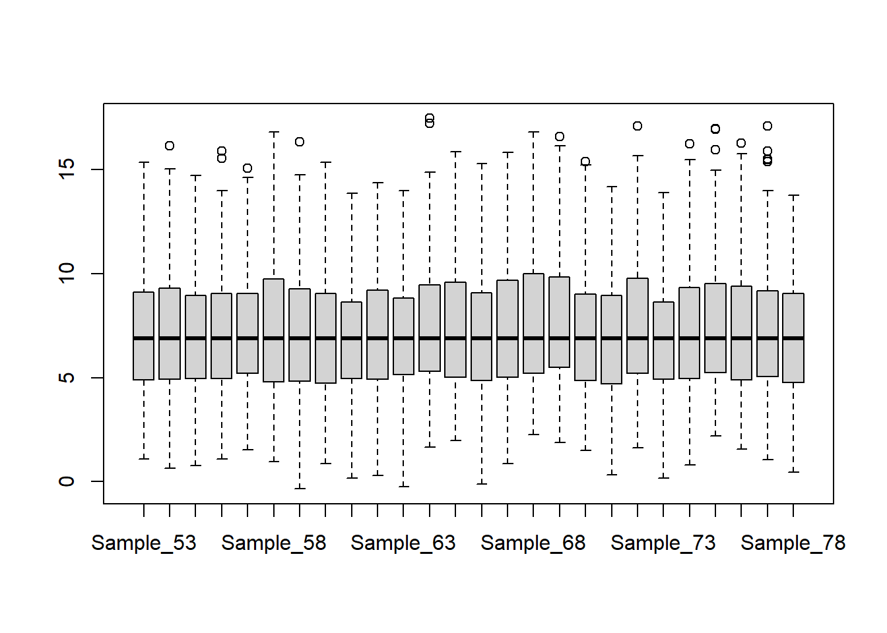
Log2 transform the data:
sf_data_norm <- log2(sf_data)
plasma_data_norm <- log2(plasma_data)
# Median normalisation would be:
#sf_data_norm <- log2(sf_data) %>% as.matrix(.) %>% median_normalization(.)
#plasma_data_norm <- log2(plasma_data) %>% as.matrix(.) %>% median_normalization(.)Note: median normalisation was also tested for EDA and DE analysis.
Create box plots of the log transformed data:
sf_bp <- t(sf_data_norm) %>%
as.data.frame() %>%
mutate(Day = as.factor(sf_pheno$Day), Horse = sf_pheno$Horse, Group = sf_pheno$Group) %>%
rownames_to_column('Sample_ID') %>%
pivot_longer(cols = A0A061DBP6:Q9XSZ5) %>%
ggplot(aes(x=Sample_ID, y=value, fill=Day)) + geom_boxplot() + theme_cowplot() +
theme(axis.text.x = element_text(angle = 90, size = 8)) +
xlab("Sample ID") +
ylab("Log2 Intensity") +
ggtitle("Synovial fluid EVs")plasma_bp <- t(plasma_data_norm) %>%
as.data.frame() %>%
mutate(Day = as.factor(plasma_pheno$Day), Horse = plasma_pheno$Horse, Group = plasma_pheno$Group) %>%
rownames_to_column('Sample_ID') %>%
pivot_longer(cols = A0A061DBP6:Q9GKX7) %>%
ggplot(aes(x=Sample_ID, y=value, fill=Day)) + geom_boxplot() + theme_cowplot() +
theme(axis.text.x = element_text(angle = 90, size = 8)) +
xlab("Sample ID") +
ylab("Log2 Intensity") +
ggtitle("Plasma EVs")sf_missing_values <- data.frame(missing_count = colSums(is.na(sf_data_norm)),
Day = as.factor(sf_pheno$Day),
Horse = sf_pheno$Horse) %>%
rownames_to_column('Sample_ID')
sf_missing_values_barplot <- ggbarplot(sf_missing_values, x = "Sample_ID", y = "missing_count", fill = "Day", scales = "free") +
#scale_fill_brewer(palette="Set1") +
theme_pubclean() +
theme(legend.position="right") + theme_cowplot() +
theme(axis.text.x = element_text(angle = 90, size = 8)) +
xlab("Sample ID") +
ylab("# Missing values") plasma_missing_values <- data.frame(missing_count = colSums(is.na(plasma_data_norm)),
Day = as.factor(plasma_pheno$Day),
Horse = plasma_pheno$Horse) %>%
rownames_to_column('Sample_ID')
plasma_missing_values_barplot <- ggbarplot(plasma_missing_values, x = "Sample_ID", y = "missing_count", fill = "Day", scales = "free") +
#scale_fill_brewer(palette="Set1") +
theme_pubclean() +
theme(legend.position="right") + theme_cowplot() +
theme(axis.text.x = element_text(angle = 90, size = 8)) +
xlab("Sample ID") +
ylab("# Missing values") Warning: Removed 30840 rows containing non-finite values (stat_boxplot).Warning: Removed 1003 rows containing non-finite values (stat_boxplot).For the synovial fluid samples, samples 6, 13, 17, 43 and 44 have a much lower number of missing values, this could correspond to a batch effect.
Its also notable that the intensity distribution is generally shifted upwards for samples that have more missing values. This agrees with the idea that small values are more likely to be missing.
An additional way to analyse the missing values is to replace them all with 0’s and then carry out clustering analysis. The rationale behind this is that if the missing values correspond to a biological effect (e.g. proteins that were abundant at time 0 that are absent at later time points or vice versa) they will cluster according to that biological effect.
Firstly, all the NA’s in the matrix need to be replaced with zeros:
# Create a copy of the data
sf_heatmap_data <- sf_data_norm
# Replace all the NA values in the copy with 0's
sf_heatmap_data[is.na(sf_heatmap_data)] <- 0Next we need to create a dataframe that contains the annotation for all the features of interest in the phenotype table. For the synovial fluid samples this is day, group and horse.
my_sample_col <- data.frame(Horse = sf_pheno$Horse, Day = sf_pheno$Day, Group = sf_pheno$Group)
rownames(my_sample_col) <- sf_pheno$Sample.NumberNext create a heatmap using the pheatmap package taking the modified data and annotation as input. Multiple clustering methods were used, but they all resulted in a similar pattern.
sf_heatmap <- pheatmap(sf_heatmap_data,
annotation_col = my_sample_col,
show_rownames=F,
cluster_cols = TRUE,
clustering_method = "ward.D2"
)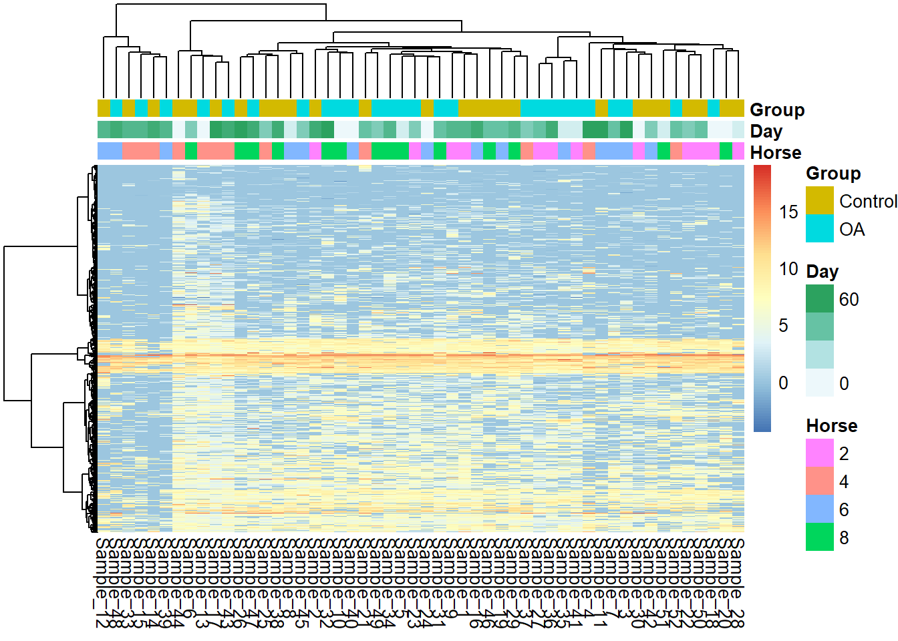
# Use the helper function 'save_pheatmap' to write the pheatmap output ot a figure
save_pheatmap_png(sf_heatmap, "./output/sf_missing_values_heatmap.png")png
2 For the synovial fluid samples the missing values don’t appear to be entirely at random. Horse 4 seems to display some clustering, the samples that have fewer missing values cluster together (6, 13, 17, 43 and 44). This may correspond to a batch effect in the processing.
We can also create a clustering dendogram to show just the clustering:
my_hclust_sample <- hclust(dist(t(sf_heatmap_data)), method = "complete")
as.dendrogram(my_hclust_sample) %>%
plot()It is better to avoid imputing missing values in proteomics data, especially when there are a low number of replicates per group as you might end up imputing based off one value and this will result in unreliable data and potential false positives. Ideally only the proteins without missing values should be taken forward for differential expression analysis. However, the synovial fluid data is very sparse:
dim(sf_data_norm[which(rowMeans(is.na(sf_data_norm)) < 0.1), ])[1] 130 52dim(na.omit(sf_data_norm))[1] 27 52There are only 130 proteins remaining if we take rows with <10% missing values and 27 proteins remaining if we take rows that have no missing values.
Now repeat the same process for the plasma samples:
plasma_heatmap_data <- plasma_data_norm
plasma_heatmap_data[is.na(plasma_heatmap_data)] <- 0my_sample_col <- data.frame(Horse = plasma_pheno$Horse, Day = plasma_pheno$Day)
rownames(my_sample_col) <- plasma_pheno$Sample.Number
plasma_heatmap <- pheatmap(plasma_heatmap_data, annotation_col = my_sample_col, show_rownames=F)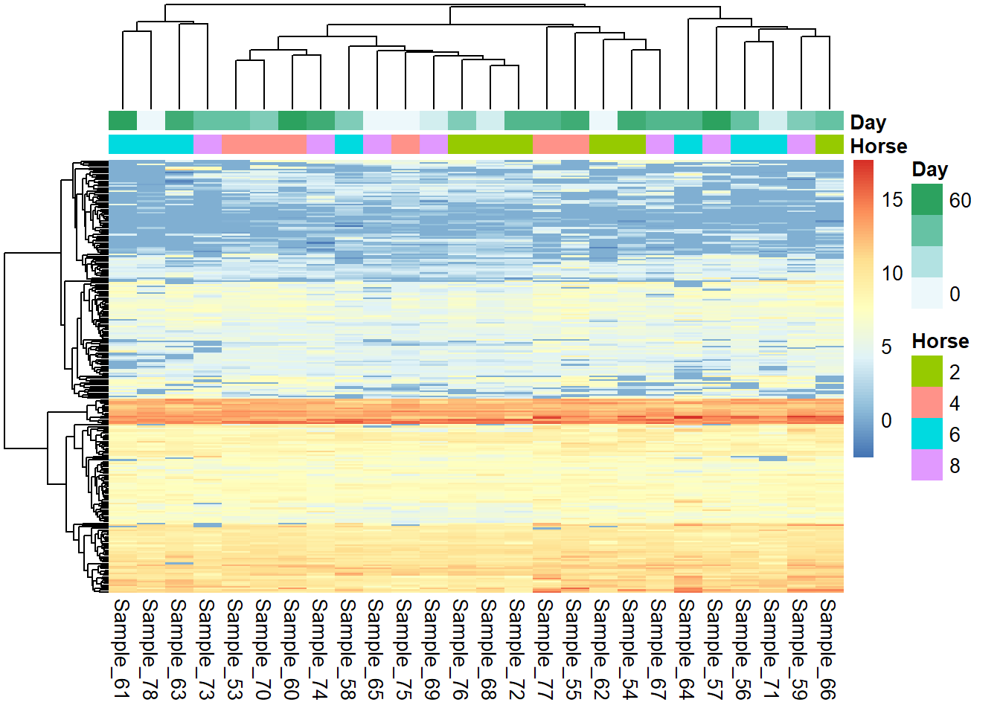
save_pheatmap_png(plasma_heatmap, "./output/plasma_missing_values_heatmap.png")png
2 There appears to be some clustering dependent on which horse the plasma was extracted from. Additionally, some mild clustering based off the time point.
my_hclust_sample <- hclust(dist(t(plasma_heatmap_data)), method = "complete")
as.dendrogram(my_hclust_sample) %>%
plot()The synovial fluid data was subset to only include the OA time course. This is so the DEP package filters the samples in a treatment dependent manner.
sf_pheno_OA <- sf_pheno[!sf_pheno$Group == "Control",]
sf_data_norm_OA <- sf_data_norm[,sf_pheno_OA$Sample.Number]sf_design <- sf_pheno_OA[,c(6,6,2,1)]
colnames(sf_design) <- c("label", "ID", "condition", "replicate")
sf_design$replicate <- as.numeric(sf_design$replicate)
sf_row_dat <- cbind(data.frame(ID = c(1:1201)), sf_data_norm_OA) %>% rownames_to_column(., "name")
sf_se <- SummarizedExperiment(assays=sf_data_norm_OA,
rowData=sf_row_dat, colData=sf_design)plot_frequency(sf_se)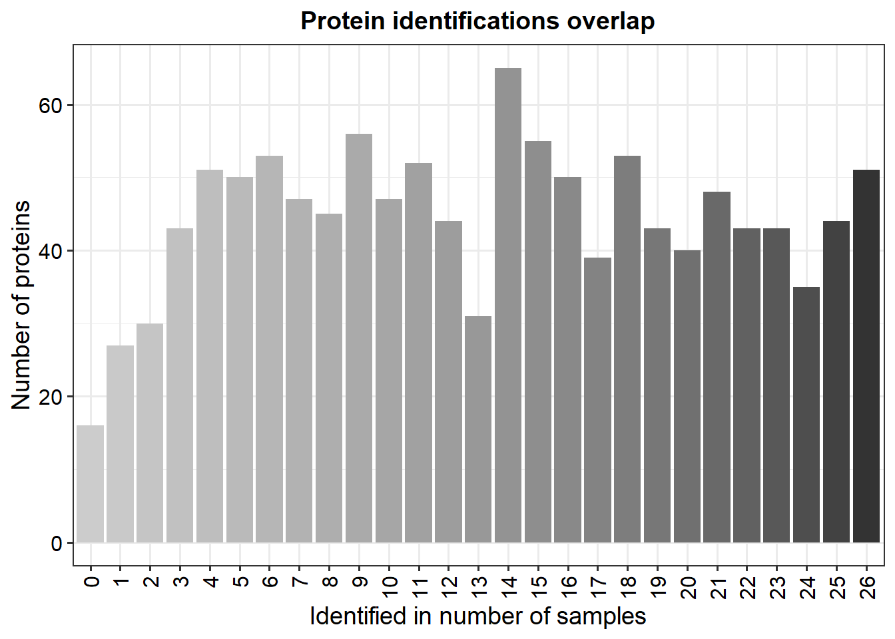
sf_se_filter <- filter_proteins(sf_se, "condition", thr = 0)plot_missval(sf_se)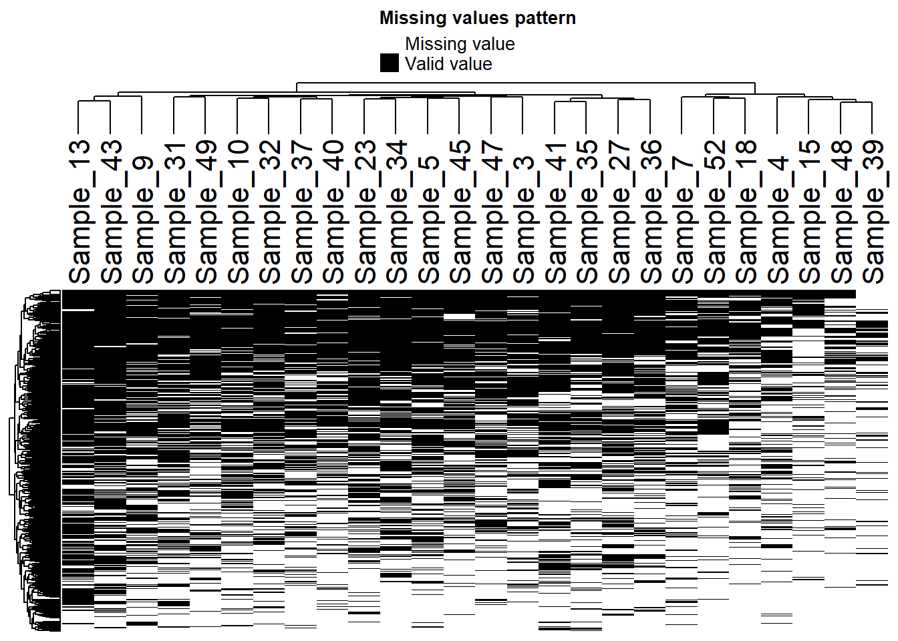
plot_missval(sf_se_filter)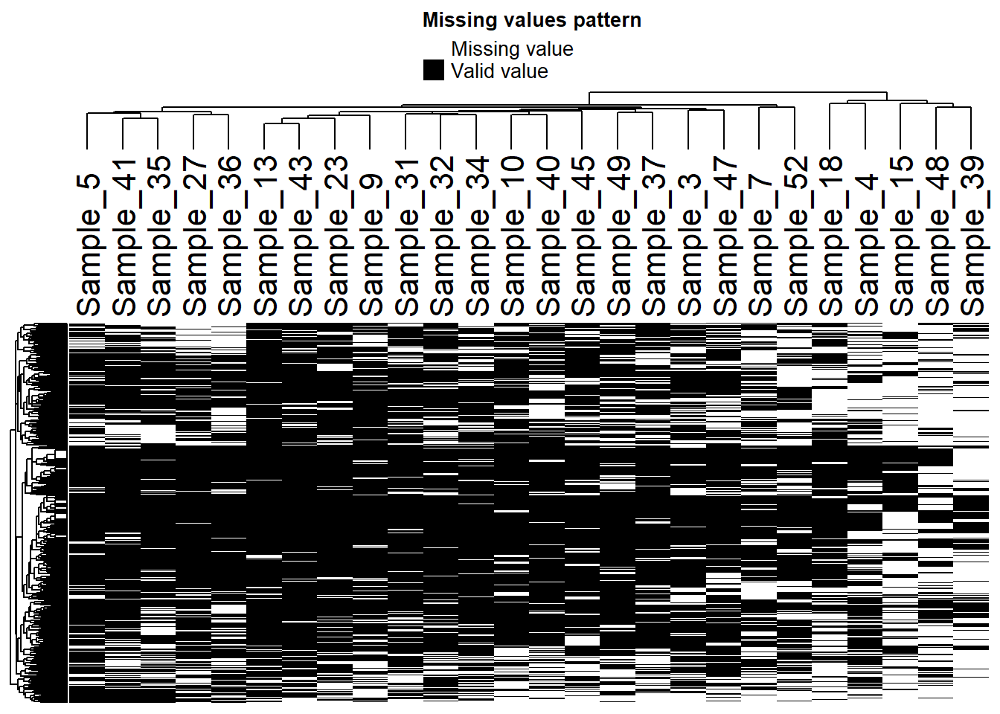
Samples 4, 15, 48, 39 all appear to be very poor quality. Might be best to remove them from the analysis altogether. However, removing 4, 15 and 39 would mean only two replicates for the 49 day and 63 day time points.
plot_detect(sf_se)Warning: Removed 16 row(s) containing missing values (geom_path).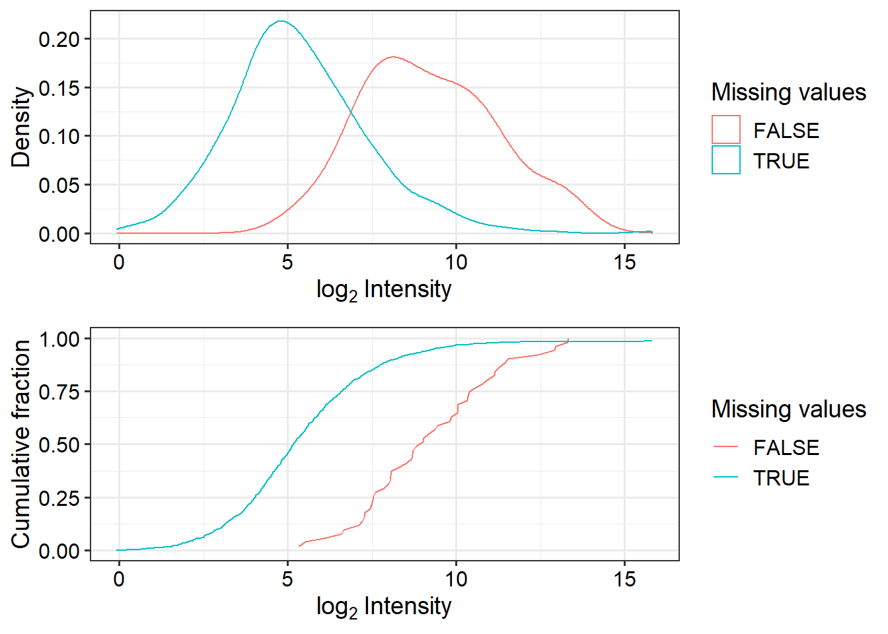
plot_detect(sf_se_filter)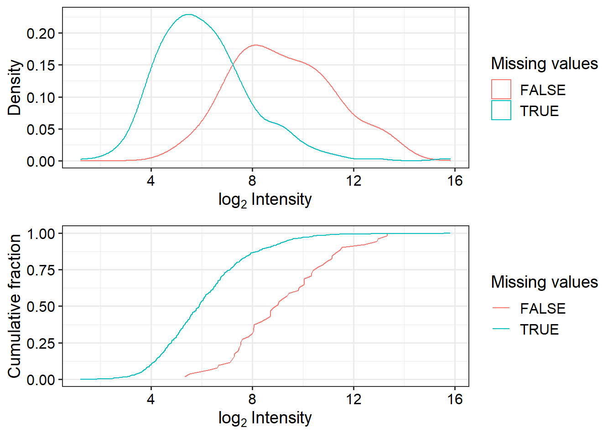
Subset normalised data by filtered missing values:
sf_data_norm <- sf_data_norm[sf_se_filter@NAMES,]plasma_data_norm_missing <- plasma_data_norm %>%
mutate_if(is.numeric, ~1 * (. > 0)) %>% # Replace numeric values with 1's
replace(is.na(.), 0) # Replace NA's with 0's
plasma_data_norm_missing <- plasma_data_norm_missing %>%
mutate("Day_0" = rowSums(plasma_data_norm_missing[,plasma_pheno$Day == "0"]),
"Day_10" = rowSums(plasma_data_norm_missing[,plasma_pheno$Day == "10"]),
"Day_35" = rowSums(plasma_data_norm_missing[,plasma_pheno$Day == "35"]),
"Day_42" = rowSums(plasma_data_norm_missing[,plasma_pheno$Day == "42"]),
"Day_49" = rowSums(plasma_data_norm_missing[,plasma_pheno$Day == "49"]),
"Day_56" = rowSums(plasma_data_norm_missing[,plasma_pheno$Day == "56"]),
"Day_63" = rowSums(plasma_data_norm_missing[,plasma_pheno$Day == "63"])) plasma_data_norm_missing <- as.matrix(plasma_data_norm_missing[,27:33])time_points <- c(0, 10, 35, 42, 49, 56, 63)
pearson <- row.pearson(plasma_data_norm_missing, time_points)Warning in ebp.null[!na] <- gren.ebp: number of items to replace is not a
multiple of replacement lengthWarning in pval.pdf[!na] <- gren.pdf: number of items to replace is not a
multiple of replacement lengthplasma_design <- plasma_pheno[,c(5,5,2,1)]
colnames(plasma_design) <- c("label", "ID", "condition", "replicate")
plasma_design$replicate <- as.numeric(plasma_design$replicate)
plasma_row_dat <- cbind(data.frame(ID = c(1:259)), plasma_data_norm) %>% rownames_to_column(., "name")
plasma_se <- SummarizedExperiment(assays=plasma_data_norm,
rowData=plasma_row_dat, colData=plasma_design)plot_frequency(plasma_se)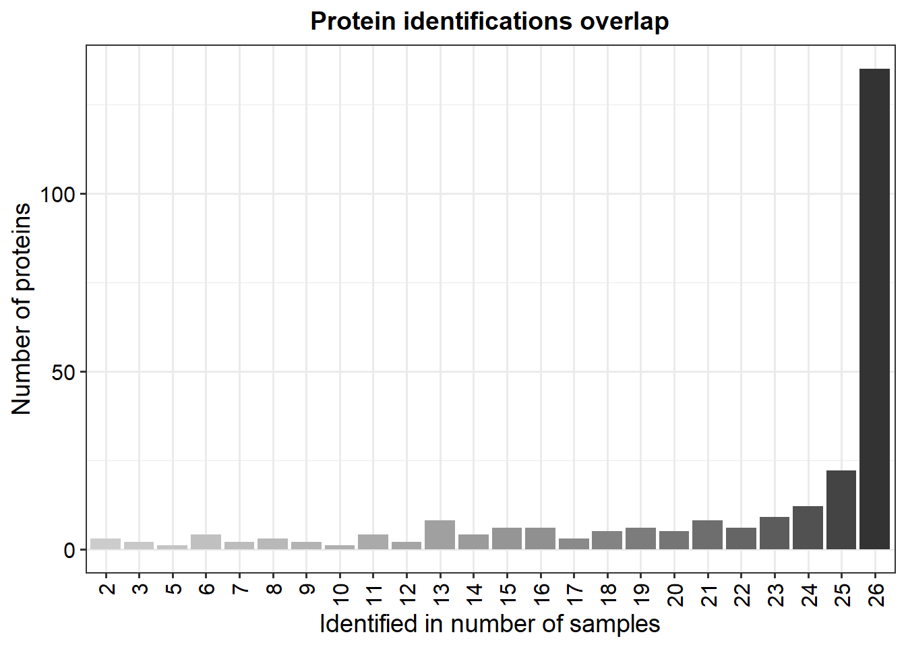
plasma_se_filter <- filter_proteins(plasma_se, "condition", thr = 0)plot_missval(plasma_se)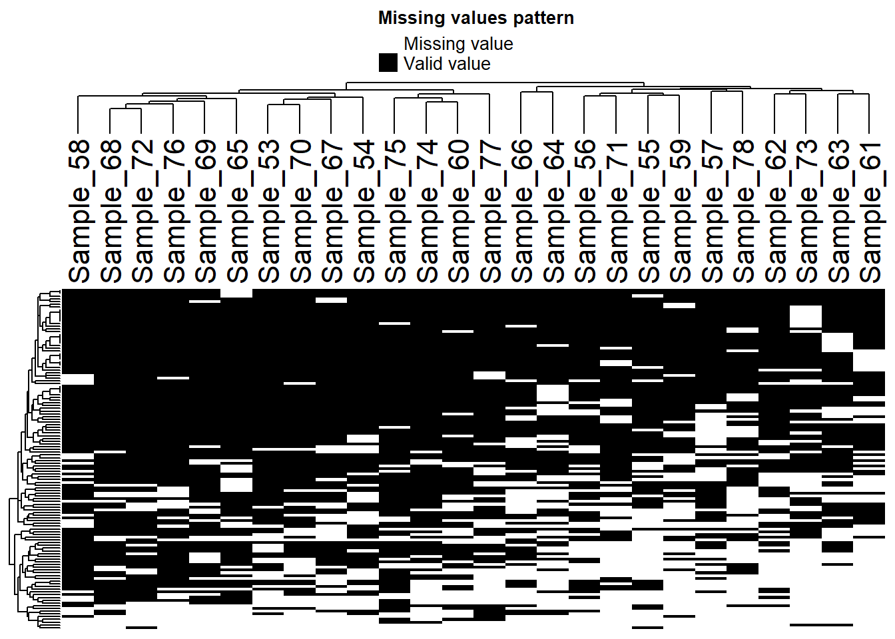
plot_missval(plasma_se_filter)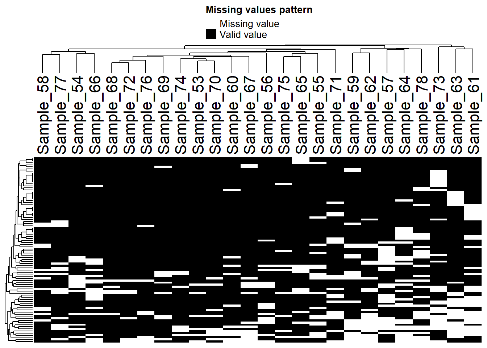
plot_detect(plasma_se)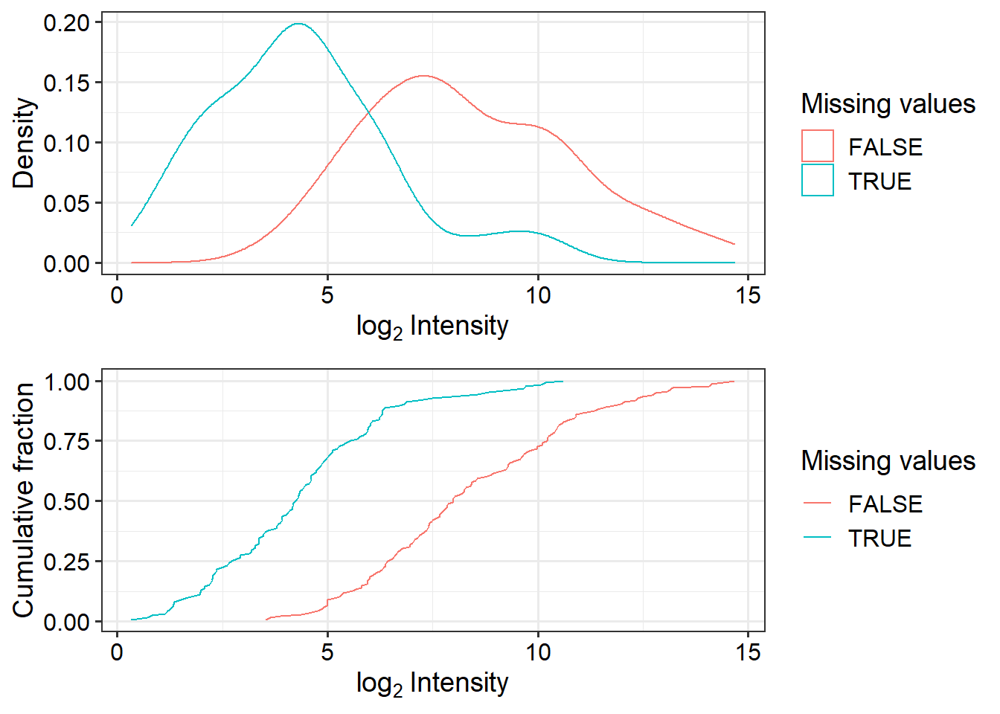
plot_detect(plasma_se_filter)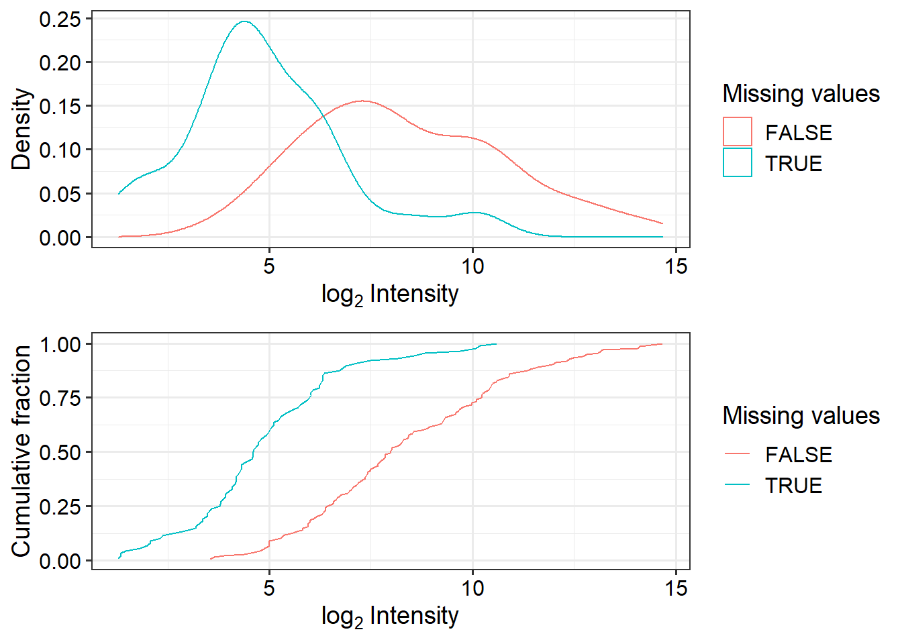
Subset normalised data by filtered missing values:
plasma_data_norm <- plasma_data_norm[plasma_se_filter@NAMES,]Save the R data objects for use in exploratory analysis and differential expression analysis.
# Plasma
saveRDS(plasma_data_norm, "./data/plasma_data_norm.rds")
saveRDS(plasma_pheno, "./data/plasma_pheno.rds")
saveRDS(plasma_annotation, "./data/plasma_proteomics_annotation.rds")
# SF
saveRDS(sf_data_norm, "./data/sf_data_norm.rds")
saveRDS(sf_pheno, "./data/sf_pheno.rds")
saveRDS(sf_annotation, "./data/sf_proteomics_annotation.rds")
sessionInfo()R version 4.2.0 (2022-04-22 ucrt)
Platform: x86_64-w64-mingw32/x64 (64-bit)
Running under: Windows 10 x64 (build 19044)
Matrix products: default
locale:
[1] LC_COLLATE=English_United Kingdom.utf8
[2] LC_CTYPE=English_United Kingdom.utf8
[3] LC_MONETARY=English_United Kingdom.utf8
[4] LC_NUMERIC=C
[5] LC_TIME=English_United Kingdom.utf8
attached base packages:
[1] stats4 stats graphics grDevices utils datasets methods
[8] base
other attached packages:
[1] DEP_1.18.0 SummarizedExperiment_1.26.1
[3] GenomicRanges_1.48.0 GenomeInfoDb_1.32.2
[5] IRanges_2.30.0 S4Vectors_0.34.0
[7] MatrixGenerics_1.8.0 matrixStats_0.62.0
[9] HybridMTest_1.40.0 survival_3.3-1
[11] MASS_7.3-56 fdrtool_1.2.17
[13] Biobase_2.56.0 BiocGenerics_0.42.0
[15] proDA_1.10.0 ggpubr_0.4.0
[17] cowplot_1.1.1 pheatmap_1.0.12
[19] NormalyzerDE_1.13.2 forcats_0.5.1
[21] stringr_1.4.0 dplyr_1.0.9
[23] purrr_0.3.4 readr_2.1.2
[25] tidyr_1.2.0 tibble_3.1.7
[27] ggplot2_3.3.6 tidyverse_1.3.1
[29] workflowr_1.7.0
loaded via a namespace (and not attached):
[1] shinydashboard_0.7.2 utf8_1.2.2 gmm_1.7
[4] tidyselect_1.1.2 htmlwidgets_1.5.4 grid_4.2.0
[7] BiocParallel_1.30.3 norm_1.0-10.0 munsell_0.5.0
[10] codetools_0.2-18 preprocessCore_1.58.0 DT_0.23
[13] withr_2.5.0 colorspace_2.0-3 highr_0.9
[16] knitr_1.39 rstudioapi_0.13 ggsignif_0.6.3
[19] mzID_1.34.0 labeling_0.4.2 git2r_0.30.1
[22] GenomeInfoDbData_1.2.8 farver_2.1.0 rprojroot_2.0.3
[25] vctrs_0.4.1 generics_0.1.2 xfun_0.31
[28] R6_2.5.1 doParallel_1.0.17 clue_0.3-61
[31] MsCoreUtils_1.8.0 bitops_1.0-7 DelayedArray_0.22.0
[34] assertthat_0.2.1 promises_1.2.0.1 scales_1.2.0
[37] nnet_7.3-17 gtable_0.3.0 Cairo_1.5-15
[40] affy_1.74.0 processx_3.6.0 sandwich_3.0-2
[43] rlang_1.0.2 mzR_2.30.0 GlobalOptions_0.1.2
[46] splines_4.2.0 rstatix_0.7.0 impute_1.70.0
[49] broom_0.8.0 checkmate_2.1.0 BiocManager_1.30.18
[52] yaml_2.3.5 abind_1.4-5 modelr_0.1.8
[55] backports_1.4.1 httpuv_1.6.5 Hmisc_4.7-0
[58] tools_4.2.0 affyio_1.66.0 ellipsis_0.3.2
[61] raster_3.5-15 jquerylib_0.1.4 RColorBrewer_1.1-3
[64] proxy_0.4-27 MSnbase_2.22.0 Rcpp_1.0.8.3
[67] plyr_1.8.7 base64enc_0.1-3 zlibbioc_1.42.0
[70] RCurl_1.98-1.7 ps_1.7.0 rpart_4.1.16
[73] GetoptLong_1.0.5 zoo_1.8-10 haven_2.5.0
[76] cluster_2.1.3 fs_1.5.2 magrittr_2.0.3
[79] data.table_1.14.2 circlize_0.4.15 reprex_2.0.1
[82] mvtnorm_1.1-3 pcaMethods_1.88.0 whisker_0.4
[85] ProtGenerics_1.28.0 xtable_1.8-4 mime_0.12
[88] hms_1.1.1 RcmdrMisc_2.7-2 evaluate_0.15
[91] XML_3.99-0.10 jpeg_0.1-9 readxl_1.4.0
[94] gridExtra_2.3 shape_1.4.6 compiler_4.2.0
[97] ncdf4_1.19 crayon_1.5.1 htmltools_0.5.2
[100] later_1.3.0 tzdb_0.3.0 Formula_1.2-4
[103] lubridate_1.8.0 DBI_1.1.2 dbplyr_2.2.0
[106] ComplexHeatmap_2.12.0 tmvtnorm_1.5 Matrix_1.4-1
[109] car_3.1-0 cli_3.3.0 imputeLCMD_2.1
[112] vsn_3.64.0 parallel_4.2.0 pkgconfig_2.0.3
[115] getPass_0.2-2 foreign_0.8-82 sp_1.5-0
[118] terra_1.5-34 MALDIquant_1.21 xml2_1.3.3
[121] foreach_1.5.2 bslib_0.3.1 XVector_0.36.0
[124] rvest_1.0.2 callr_3.7.0 digest_0.6.29
[127] rmarkdown_2.14 cellranger_1.1.0 htmlTable_2.4.0
[130] nortest_1.0-4 shiny_1.7.1 rjson_0.2.21
[133] lifecycle_1.0.1 jsonlite_1.8.0 carData_3.0-5
[136] limma_3.52.1 fansi_1.0.3 pillar_1.7.0
[139] lattice_0.20-45 fastmap_1.1.0 httr_1.4.3
[142] glue_1.6.2 png_0.1-7 iterators_1.0.14
[145] class_7.3-20 stringi_1.7.6 sass_0.4.1
[148] latticeExtra_0.6-29 e1071_1.7-11